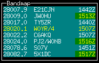

a free console mode general purpose CW keyer, voice keyer,
logging and contest program for hamradio
under LINUX
Content |
. |
TLF-0.9.9 is a console (ncurses) mode general purpose CW
keyer, -logging and -contestprogram for hamradio. It supports the
CQWW, the WPX, the ARRL-DX , the ARRL-FD,the
PACC and the EU SPRINT contests (single operator)as
well as a lot more basic contests, general QSO and DXpedition
mode. It interfaces with a morse code generator, a number of
radios, and with a DX Cluster. Tlf can project cluster
data into the excellent Xplanet program, written by
Hari Nair.
Contest operation mimics the popular
TR-Log program for DOS, the output file is TR- as well as
CABRILLO compatible. The program was written for console mode
on purpose, to make it run also on smaller machines, or remotely via
a modem link. TLF is developed under SuSE 9.0, and tested
under SuSE 8.0, kernel version 2.4.1. Beta testers welcome !!!
There is now also a two-floppy version in development called
debianham. That version is maintained by the Debian
community, and contains a Linux mini-distribution and a copy of tlf
(version 0.8.19).
. The cwdaemon-0.7 is fully supported,
featuring direct mode for the keyboard and output to parallel
and serial ports and speed and weight control from the keyboard.
Two
more keyer modules are supported. The cwkeyer from Ivo, 9A3TY with
output on either ttyS0 or ttyS1,and the (more flexible)
cwkeyer for the parallel port from Eric, PA3FKN with output on LP0.
They both work with a cw output device called /dev/cwkeyer,and
can be fully controlled by TLF.
As the cwdaemon is now
more flexible than the other modules, and easier to maintain (it runs
in user mode rather than as a kernel module) focus of the development
is on the cwdaemon.
Tlf works with Hamlib-1.1.4., you
find it at Sourceforge.com.
Tlf provides full ip networking between tlf nodes, syncing/distributing log, packet data, frequency data,local talk, serial numbers, time sync etc...
I have been using mostly TR-Log for
contesting, or CT when working as guest op in M/S operations. I am
especially fond of TR-Log. When you have a DOS computer, you don't
need TLF. You should use TR-log.However, I have now removed all
WINDOWS and DOS software from my computers and put LINUX
on.This means I can't use my favourite contesting software anymore
(yes, I have also experimented with DOSEMU, but without great
success...)
TLF started as a simple keyboard interface
to cwkeyer-0.1 from 9A3TY. When the WPX 2001was 2 months away
I had to try to write my own program. That turned out to be great
fun. The result of this is TLF,which very much represents my idea of
what a CW contest program should do.
Some have asked what the
name stands for. The old hands from the days when CW was still
hand-crafted willcertainly know. It means Try Left Foot.
On
special request TLF will now also log SSB and DIGIMODE qso's.
Back
to contents
Features |
|
Permanent information displays: |
|
|
|
Optional information windows:
|
|
Keyer:
|
|
|
6 - 60 wpm,
24 CW messages programmable online (you will not remember more anyway..)
Auto-CQ with adjustable delay
Output to the TX on /dev/ttyS0 or /dev/ttyS1 or /dev/lp0 or /dev/lp1 via the networked cwdaemon-0.7
Sidetone is adjustable (and optional).
Weight adjustable
Band info output on lp0
Database:
Uses standard cty.dat.
Interfaces:
TLF
interfaces to the keyers through ip networking (cwdaemon),
Both for output on the parallel port and the serial port.
Interface
to the radios has been kept modular, since tlf-0.7.0 the hamlib
library is supported, which enables control of various popular rigs.
Tlf is now fully networked, with an extremely simple setup procedure... You have to see it to believe it..!

Download cwdemon-0.7.tar.gz and untar it.
To install
the daemon, do (as root):
1: ./configure
2: make
3: make
install
The program is installed in /usr/sbin, and can be
started (as root) with cwdaemon (or cwdaemon -n).
The default
output port is /dev/lp0. Be sure to unload the lp module first (rmmod
lp).See the provided README for more details.
The manual page will
tell you some more about startup options, you could also type
cwdaemon -h.
Testing cwdaemon
Install the netcat package
and type: 'nc -u localhost 6789'.
Any character typed on the
command line will be sent to cwdaemon after you hit enter. You could
also use the following shell script which is character based:
******************************************* #!/bin/sh old_tty_settings=$(stty -g) stty -icanon trap 'stty "$old_tty_settings"; exit 0' INT echo "Press (CTRL-C) to interrupt..." while true; do Keypress=$(head -c1) echo $Keypress | nc -q0 -u localhost 6789 done *******************************************
This only works if your version of netcat supports the -q switch. If you don't have it, you also could try: echo $Keypress > /dev/udp/localhost/6789
- Get the Hamlib 1.1.4 library
- Unzip and untar the archive
-
Go into the top directory
- As root, do ./configure, make,
and make install.
- Add /usr/local/lib to /etc/ld.so.conf and run
ldconfig (as root).
Get the latest distribution of tlf from the download site
(http://savannah.nongnu.org/download/tlf).
Tlf now supports GNU
autoconf and automake, which automates the installation process, and
makes sure you haveall the goodies on your machine which tlf
needs..
You have to be root to install tlf.
* Read
./doc/README and INSTALL
* Untar the archive (e.g. tar zxvf
tlf-0.9.9.tar.gz)
* cd into the top directory (cd tlf-0.9.9)
*
type ./configure (if you want to use hamlib, type ./configure
--enable-hamlib, install hamlib first...)
* type make
*
type make install
Directory structure
It is good practise to use separate directories for the different
contests.
TLF can be started from any directory. to start a
specific contest you need to:
mkdir contestname
copy a logcfg.dat file into it
edit the logcfg.dat file (call, logfile,) to suit your needs
edit the rules file for the relevant contest ( mults, points)
start tlf with tlf. Normally startup messages are suppressed to enable a quick restart of the program.
If you start tlf for the first time in a directory you will get messages from the services which are started. If you want that later on (for debugging purposes) start tlf with tlf -v.
If you want to know which version you are running start with tlf -V.
If you want help, start tlf with tlf -h
Example:
E.g. For the cqww2003ssb I made the following structure:
~/tlf/contest/cqww2003ssb/ (the working directory tlf is started from...)
~/tlf/contest/cqww2003ssb/logcfg.dat
~/tlf/contest/cqww2003ssb/cqww2003ssb.log
~/tlf/contest/cqww2003ssb/rules/cqww
The general commands to configure tlf are in logcfg.dat; the contest specific parameters are in ./rules/cqww.
There are examples in the /usr/local/share/tlf and /usr/local/share/tlf/rules directories. You can use these as templates and edit your call etc...
With tlf-0.9.9 it is now possible to start tlf with different logcfg.dat files for each operator. If you sgtart tlf e.g. With tlf -fPA0R you get the logcfg.dat file for PA0R.
The cty.dat and mastercalls file
sit in /usr/local/share/tlf, and they are read from there. You may
want to add information to them before the contest. Leave them in
place so tlf can find them !! You normally need root privileges for
editing in /usr/local/share...
The cty.dat file included in the
distribution of tlf-0.9.9 is the one from October 2003.
Back
to contents
Make sure the cwdaemon runs (start as root)before starting tlf if
you want to use the keyer or the voice keyer....
Start the program (tlf).
|
. / clfile |
This is the input FIFO for the DX cluster monitor. You only
need it when you use a dx cluster, or any other information you
want the program to display, and if you cannot use ttyS0 or ttyS1
(e.g. you have only 1 serial port, which is used for rig ctrl).
call -r packetinterface | tee tlfworkingdirectory/clfile
|
|
cty.dat |
This is the DXCC database. It resides in /usr/local/share/tlf. |
|
mastercalls |
This is the contest calls database. It resides in /usr/local/share/tlf. |
|
. / .paras |
The parameter file. It remembers some parameters for the next session. TLF will generate one for you. It is not necessary to touch this, as all parameters are included in the file logcfg.dat, which can be edited within tlf. |
|
. / logcfg.dat or other_logcfg_file (start with tlf -fother_log_file) |
The configuration file. It enables you to configure tlf for a
specific operator,for normal qso operation, etc. A template is
available in /usr/local/share/tlf. You should stick to the format
as much as possible. In case certain parameters are mutually
exclusive, the last one wins.... |
|
. / rules/contestname |
The rules file. It enables you to configure tlf for a specific
contest, for normal qso operation, etc. A template is available in
/usr/local/share/tlf/rules. You should stick to the format as much
as possible. In case certain parameters are mutually exclusive,
the last one wins.... |
|
xxxxxxxxxxxxxxx.log |
The log file. You name it! |
|
. / cabrillo |
This file will be generated by the ":write" command after the contest. Rename to YOURCALL.CBR and email.... |
|
. / logname.adif |
This file will be generated by the ":adif" command after the contest. This file format can be used to post the log to LOTW or import in other loggers. |
For the latest commands, keys and parameters for logcfg.dat and rules please read the README and the MAN-PAGE (man tlf), which are up to date...
CT compatibility has been added to tlf in order to make it
easier for those who have been workingwith CT a lot as guest
operators during M/S or M/M operations.
Two things have been added
to tlf to accomplish this:
CT compatible synonyms for those commands used most often in CT
Use of the ENTER, INSERT and + keys for logging qso's
The CT compatible commands are active all the time, they are just
aliases for existing tlf commands.
By setting the CTCOMPATIBLE
parameter in logcfg.dat logging in tlf will behave like CT instaead
of TR.This means that:
ENTER will log the qso
Insert will send message F2 (to be programmed as @ 5NN 'yourzone')
"+" will send F3 (QRZ message, e.g. TU 'yourcall') and log the qso, instead of toggling between CQ mode and S&P mode (there is no S&P mode in CT).
The log file of tlf is TR compatible, also in CT compatibility mode.
All activity takes place in the call input field (and the
exchange input field..).
When you enter (part of) a call, several
things happen:
If check partials is on, and auto_complete is active, the call will be automatically completed. E.g. when youtype PA0RC, it will automatically complete to PA0RCT. The same for KC1X?, W3LP? etc....
Backspace will remove character from the end of the call
ESCAPE will remove the call completely, and also erase the exchange field
left_arrow will allow you to edit the call in the input field (enter edit mode)
Call edit now uses Insert mode as default.
In edit mode, ctrl-A will jump to the beginning of the call, ctrl-E to the end.
In edit mode, Backspace removes the character before the cursor, Delete deletes the charactor under the cursor.
If after a Delete or an Insert you leave edit mode with TAB, the auto_complete function is switched off for the running qso.This enables you to change a call when it is locked by auto_complete because it is a unique call in the database
If after a Delete or an Insert you leave edit mode with ESCAPE or ENTER, auto_complete is not switched off.
If the check window is on, it will show the last qso's in the log (on the contest bands)
The bottom status line will show country and qrb info, as well as the local time of the station..
When you press Ctrl-p you will get a screen with the muf curve based on the number of sunspots,the distance, bearing , sunset, sundown etc. Any key will get you back to where you came from.
You can go to the exchange field with SPACE or TAB or ENTER.
For the arrl_ss contest the exchange input is intelligent, incl. call update in the exchange field.E.g. in SS you can enter 23A 98OH and tlf knows what you mean.
ENTER will log the qso in SSB mode, and also if you are in CW and qso (non-contest) mode.
In case you want to log a cw qso during a contest without cw output, you can use "\" (backslash).
Tlf will automatically generate an
qso b4 message in case you try to work a dupe. This message is taken
from message F7. If you want to work the dupes anyway set NOB4
in logcfg.dat !!
Back
to contents
Using the "-" key
will delete the last qso from the log (after asking your permission
of course).
You can edit the 5 previous qso's with "Up-arrow".
This qso editor is using overwrite mode. Use the cursor keys
tonavigate, and leave edit mode with enter, tab or escape.
You
can use Insert and Delete. If you use "up-arrow" in the
first line you go into LOG VIEW mode.
During edit mode LAN
messages are kept in a buffer. You can edit anywhere in the log with
the :edit command.
Edited qso's are NOT sent to other nodes in the network. But you can sync the logs with another node with the :SYNC command.
.
You can change RST sent when
a Call is in the Call Input Field. Page_down will lower
the S value and Page_up will increase it.
RST
received can be changed by going into the exchange field
and using Page_down and Page_up accordingly.
The commands are :MODe, :CWMode, :SSBmode and :DIGimode .
When you are in the call input field, use the left_arrow
and right_arrow keys to change the band, also with the Trlog
commands Alt-v and Alt-b. You can switch off the arow
keys by entering NO_BANDSWITCH_ARROWKEYS in the logcfg.dat file.
When
contest mode is on, only the contest bands can be reached
(160-80-40-20-15-10).
For the WARC bands set CONTEST=qso and uncomment
CONTEST_MODE in logcfg.dat
If a radio interface is present,
band switching can be done in several ways:
Switch bands on the radio - tlf will follow
Switch bands on tlf - the radio will follow
Enter a frequency in tlf - the radio will jump to that qrg
Pick a frequency from bandmap or spot list - the radio will go there
If you have a frequency int the MEMory, press # - the radio will go there
Some special commands are needed for use in a contest:
Switch between Run mode and S&P mode: +(CT mode has no S&P)
Confirm last serial nr: "_" (underscore)
Confirm last call: "="
Show list of zones yet to be worked: ":zones"
Show list of countries left over: ":cty"
Show propagation: "ctrl-p"
Switch to keyboard: "," or "ctrl-k"
Change the speed with Pg-up or Pg-down. You can see the speed in the upper status line (S=45)
Change the weight with Alt-w, Values from -5 to +5, ENTER.
Change the auto_cq delay with Ctl-page-up and Ctl-page-down. This only works if the call input field is empty. If it is not, you will change the RST value. Set it to the total length of the message + the receive time.! On some terminals the Ctrl-Pgup and Ctrl-Pgdown keys don't work. You can also use the :CQDelay command. You can see the value in te upper status line (D=11)
Start the auto_cq with F12. Or if contest mode is on, and input field is empty, with ENTER.
Switch to keyboard: "," or "ctrl-k" The above commands also work when the keyboard is on.
Change the sidetone frequency with ":tone". A value of 0 will switch sidetone off.
The rig control works with Hamlib-1.1.4.
The radio interface is switched on with the following commands in logcfg.dat:
RADIO_CONTROL #switch the interface on
RIGPORT=/dev/ttySx or /dev/USBx
You can use e.g. /dev/ttyS0, /dev/ttyUSB1, etc... anything that looks like a tty. RPC rig daemon users should have RIGMODEL=1901 and RIGPORT=localhost. In this case RIGSPEED is ignored.
RIGMODEL=351 (Hamlib index number of your rig, this is the OMNI VI plus )
RIGSPEED=2400 (1200 - 56k tested )
RIT_CLEAR (resets rig after qso is logged (only if your radio and Hamlib support it)
SHOW_FREQUENCY (shows large frequency display if score window
is off)
See your trx frequency on the right hand side of the
screen just below the log line.
E.g. TRX: 10105.0
Tlf will follow the bandswitch of the trx.
Fast qsy by just entering the new qrg into the empty call input field in kHz (e.g. 3505).
Remember your run frequency by putting it into the memory with "#". The memory display will pop up and show the frequency you can return to by again entering "#".
Grab a dx spot. This only works if you have a radio interface program for your type of trx running, and if you are connected to a cluster and have the bandmap or spot windowon screen. Just enter part of the call of the dx station (e.g. 6W when the call is 6W/DJ0LN/P), enter "ctrl-g" (for "grab")and you will see the trx magically qsy to the spot frequency, where you can loose valuable time in thepileup. :-}
Add a spot to the list by entering a Call into the call field and pressing Ctrl-A. Thisworks with band map as well as spot list.
If you set the RIT parameter (:RIT), the RIT will be reset after a qso is logged.This only works if your radio supports the set_rit function!!!

Ctrl-f
will give you a window in which you can change the TRX frequency in
100Hz steps (with up-arrow, down_arrow).Or left-arrow, right-arrow
(20 Hz)
A Radio Control Interface is available for a growing number of
rigs.
The development is done by the active Hamlib group. Info
about rig compatibility is available on:
http://hamlib.sourceforge.net/
Look at the log with
":view". It starts a new shell with LESS.
You
can also simply use up-arrow to move the cursor
upwards...
Edit the log with ":edit". It starts a new shell with JOE, VI or E3. Other editors on request...
If that is not enough you can start an empty shell with "!", and grep the logfile, copy it, etc...
Set parameter TIME_OFFSET in logcfg.dat when your computer clock
does not run on UTC. The parameter can have anyvalue between -23 and
23.
Edit the cty.dat file, and put the data of your qth into
the line representing your country. An example:
United States: 05: 08: NA: 43.00: 87.90: 5.0: K:
If you are in zone 04, change the 05: into 04:, change the 43.00 and
the 87.90 into your location. and the 5.0 (time difference to GMT) at
the end to 6.0
This will enable tlf to show the DX time of a
station you are working.
Tlf is picky with respect to the exact
format of the file; make sure the stuff is in the right
columns!
When there is a TIME_MASTER on the network,
the tlf clock will be synchronized with the master.
To designate
a station as a time master, just set TIME_MASTER in logcfg.dat.
Back
to contents
The score window is adapted to the contest you are in. So if
the contest parameter is set to cqww, you geta special score window
for it, showing qso's per band, countries worked per band, zones
worked per band and total score.
It also gives an indication of
the qso's per multiplier, and the qso rate based on the last 10
qso's.
When you restart the program the score is recalculated
from the log file. When a qso is deleted from the logfile
the score is not adjusted, neither is the list of counties worked
updated. You can correct this by using the :REScore command.
With this operation the points are taken from the log, and the mults
are recalculated! Through deletion of qso's and node down times the
logs on separate nodes may differ after running for considerable
time. This is normal, it happens also with CT and Trlog. Tlf can
resync the log of a node on the fly by setting the
SYNCFILE=<user:password@host/dir/logfile> parameter in
logcfg.dat.
By issueing the :SYNC command the local log is merged with the log on the other node.
It is even possible to start a node
mid-contest without a log, :SYNC will get the log from the master
node.
At the bottom of the window you will see the QSO's/MULT
display, and the RATE (qso's per hour, based on the last 10
qso's) as soon as tlf has enough data to calculate it. The RATE
display is rather coarse at the moment., as it is based on the time
it took for the last 10 qso's....
The format of the display is
dependent on the type of multiplier(s). I may be that for a certain
combination of points and mults a display is not yet available, send
your requirements to the mailing list (tlf-devel@nongnu.org). Well in
advance of the contest you need it for !!
There are 24 messages. More than I can remember. Some have a special use:
F1= CQ call (run mode) or DE CALL (S&P mode). The "DE" can be switched on or off (:demode)
F2 = free (normally "@ DE %"
F3 = runmode report (e.g. @ [ 14). If # is used, the serial nr can be SHORT (TT1)
F4 = free (normally "73" or "TU")
F5 = free (normally "@"
F6 = free (normally "%"
F7 = free (normally "B4"
F8 = free e.g. "AGN"
F9 = free e.g. "?"
F10 = free e.g. "QRZ?"
F11 = free e.g. "UR CL?"
F12 = auto_cq message, e.g. "TEST PA0RCT"
S&P TU msg = e.g. "TU [14"
Run TU msg = e.g. "TU %"
alt-0 to alt-9 can be programmed in the logcfg.dat file
For the messages you can use a number of special characters:
% for YOURCALL
@ for HISCALL
[ for RST
# for serial nr.
- lower keyer speed by 5 wpm (parallel interface only !)
+ increase keyer speed by 5 wpm (e.g. " ++5NN--#") (parallel interface only)
The easiest way to handle the
messages is to edit them in the rules file for the relevant contest.
You can keep separate rules files for different contests and
operating situations.
You can list the messages with ":list"
and change them with ":message".
Back to contents
With the ":check" command you can open a
pop-up search window which will tell you:
On what bands you worked the station, and what the exchange was
If the station is a dupe, the color will be red and the terminal will beep.
On what bands you worked the country already
On what bands you worked the zone already
In case of other multipliers, on what bands they were worked.
If the exchange is the same for every band, it is automatically filled into the exchange field
In the arrl sweepstakes contest e.g.
the exchange is SERIAL-PRECEDENCE-CHECK-SECTION.
Tlf enables you
to input these items in almost any order, like 12A 87ORG or ORG 12 87
A.If you set CALLUPDATE in logcfg.dat, the call in the call input
field will be updated also. (needs blanks on bothsides, works for
US/CANADA only...). The lowest line in the check window shows if tlf
has recognized the right ingredients.
If no section is present in
the exchange, tlf will ask for it before logging the qso.
This
needs some experimenting before the contest to get acquainted
with this feature.
Back
to contents
The check partials function is controlled via the logcfg.dat
file with 3 parameters:
PARTIALS - switches the check partial function on (max. 9 calls)
USEPARTIALS - enables the auto_complete function
MANY_CALLS - shows a large window with up to 50 calls
The check partial calls function uses a
database derived from the master.dta file containingsome 25.000 known
contest calls.
When the USEPARTIALS parameter is on, tlf will
complete the call as soon as it is unique in the database.
This
can of course lead to strange effects, but in my experience there are
far more hits than misses.Sometimes you must edit the call because it
has locked on a unique call.... Try it, and switch it off when you
don't like it.
Some people find that 9 calls is not enough....
MANY_CALLS will give you many calls.
Back to
contents

The propagation screen is invoked with ctrl-p.
The
calculation actually uses the SSN value which is derived from SFI. If
you are connected to a cluster, the WWV values will automatically be
stored, and the last value used.Clfile is periodically checked for
this, and the value stored in wwvfile.
Starting with version 0.4.4
it is now possible to include the value of R or SFI in the logcfg.dat
file.
The value will be picked up within a minute, and will be
used for subsequentcalculations. The calculations are quite simple,
but you may compare it to e.g. minprop 3. and see that it really
comes quite close. This may be enhanced in the future, to influence
the multiplier map...
All timing is related to UTC.
Back
to contents
From version 0.6.1 onward, tlf has three methods to connect to a DX Cluster:
Built-in Telnet client with auto-connect
Built-in terminal for TNC or MODEM for ttyS0 or ttyS1 (2400 Bd fixed)
FIFO in the working directory to hook up with e.g. ax25 based connections
You get to the packet terminal with :pac.
Telnet internet connection
To enable
the telnet interface set the following commands in
logcfg.dat:
TELNETHOST=internet address
TELNETPORT=8000 (most
of the time)
e.g. the following lines to connect to
44.137.24.19 port 8000:
|
#TELNETHOST=217.126.142.43 |
TNC or Modem connection
To enable the serial terminal interface set the following
command in logcfg.dat:
|
TNCPORT=/dev/ttySx or /dev/USBx |
This will open a tty for packet at 2400 Bd
Terminal
operation
The terminal commands are:
:ENTER (in tlf) = goto terminal
: (in terminal ) = goto tlf
pg-up = goto view mode
up-arrow, down-arrow = scroll in view mode
ENTER = goto edit mode
FIFO connection via the file
system
To enable the filesystem interface set the
following command in logcfg.dat:
|
FIFO_INTERFACE |
Tlf then regularly looks into a fifo called "clfile"
in its working directory. It is your responsibility to get the
info into it. Some examples:
Goto the working directory and start a telnet session in a new terminal.
start this session with telnet node | tee -a clfile
Connect to the dxcluster, e.g. using call with
call -r interface | tee clfile
For filtering, bandmap etc to work, the lines have to start with: "DX de", Escape characters at the start of the linehave to be filtered out (e.g. by using "|cut -c 7-97"
As the FIFO_INTERFACE overrules the other ways of connecting, be sure to switch it off when using the tty or the telenet client!!
Relevant commands:
:cluster - full cluster content (filter with ":fil")
:spots - only DX spots in order of time
:map or "." (dot) - only spots for this band, sorted in frequency
:ENTER - Go to the packet terminal
Ctrl-B - Send msg to the terminal (on node connected to cluster through terminal only)
Ctrl-A - add your
own spot to the list (if radio interface is not present the freq can
be input manually)
if the LAN is active the spot will be sent
to all nodes
Ctrl-G - grab the spot: type a partial call from the spot or map window into the call field first.
:FILter - the filter has 4 functions: 0=none, 1=garbage out, 2=announcements out, 3=spots only
Bandmap commands:
Enter the bandmap with :map or "." (dot)
When you are in the bandmap the name changes to BANDMAP
Use "." to change to NEEDED (only countries you still need to work)
Use pg-up, pg-dwn, up, down to scroll the map
A "+" sign appears if there is an offset from start of list
Leave the bandmap with ESCAPE
Outside the bandmap you can Grab a spot by entering a
few characters into the call input fieldand typing ctrl-g.
The
full call will appear in the input field, and the trx will go to the
spot frequency (only iftrxcontrol is working).

|
|
Spots younger than 10 minutes are marked!! |
|
 |
The bandmap sorts the frequencies and flags the ones you don.t
need (yellow). |
|
|
You can use Hari Nair's Xplanet program to show the spots in
their location on the globe.To show azimuthal projection centred
on Eersel the Netherlands you start Xplanet with: |
||
|
MARKERCALLS=tlfmarkers |
|||
|
to show the calls spotted on the cluster (your directory may
vary, here it is the directory you run tlf from....) |
|||
The tlf network interface uses the udp/ip protocol. It
can handle as many nodes as the network bandwidth supports,but is
limited to 8 nodes at present. (Address space is 64, so recompilation
with MAXNODES=64 will handle 64 nodes).
The udp protocol is used for minimum protocol overhead. Tests with several tlf nodes have shown that using the tcp protocol does not cure a network problem, it just adds protocol overhead. The tlf protocol uses short messages,which will not exceed the limit where fragmentation sets in. (udp buffer length is 256 bytes). A :SYNC command will synchronize the log on your machine with the log on another specified node if at all necessary (e.g. If a node has been down for some time, or started up during the contest).
Each node has 1 receiver on udp port 6788, and sends the data it generates to the destination nodes.The list of destination nodes is defined in logcfg.dat of every node.
The message format is very simple: < THISNODE > < MESSAGE TYPE > <...data string...>
THISNODE is a character(A to H) and message type is also a character (1 to 9).
The following message types
presently exist:
|
1 |
Log data |
|
2 |
Packet data from cluster |
|
3 |
Add spot data to bandmap ("DX de TLF: ...") |
|
4 |
Frequency data |
|
5 |
Talk data |
|
6 |
Present serial number |
|
7 |
Present utc time |
Log data
Every tlf node has a copy of the
complete log database. This has several advantages.
First, having
the log at several places in the network reduces the risk of loosing
it...
Second, it allows using the full power of the log search
function (exchange recall and multiplier search).
Packet data
Packet data is available on all
nodes, enabling quick spot access. This also means that only one node
needs a packetconnection...
Add spot data
Enables
local spotting and bandmap preload from any node on the network, even
remotely on the internet...
Frequency data
Every
60 seconds the node broadcasts its operating frequency (if trx
control with Hamlib is used), or theband it is on. This greatly
simplifies passing mults to a different band !! A display window
shows what qrgthe nodes are working...(:FRE or ALt-J)
|
|
Here you see that station A is on 7010 kHz and Station C (no trx control) is on 20 meters. |
Talk data 
By just typing
|
Alt-g please 2 beers for 80 meters |
, this message is broadcast to all nodes on the list. A
display window shows the last 5 messages received... (with ctrl-t
or Alt-g)
Present serial number
Used when
a serial number is used for the exchange (SERIAL_EXCHANGE is set in
logcfg.dat), e.g. in the wpx contest.As soon as a serial number is
sent, it is blocked on the other nodes.... This bridges the time
between sendingthe exchange and actually logging the qso,
mostly preventing that serial numbers are given out twice!!
Present
utc time
When TIME_MASTER is set in logcfg.dat the
station broadcasts the actual utc time to the other nodes.
When
you do this, the other tlf nodes will use this time. The time receive
function has a smoothing filter,so one wrong number will not kick the
node out of sync.
To use networking with tlf is not
difficult.
First step is to provide ip connectivity
between the nodes that you want to communicate with. It is not
important whether you use an ethernet link, ppp, or whatever.In my
shack I use a 10 Mbit coax ethernet, with a ppp bridge to the house
via a 56k modem. This allows meto remote control the OMNI from the
living room...
For tlf, the word is: "if you can ping it, it
will communicate".
There is one thing to remember: there
must be connectivity for port number 6788. So if there is a
firewallbetween two tlf sites, make sure it passes traffic to port
6788. (Just in case you would want to include theinternet in your
routing...)
Second step: Provide a short form unique
address for the node, so tlf can seewhich node generated the
data. For brevity this address is a character from A...H (for an
address spaceof 8 nodes). If tlf hears it's own node ID it will
ask for another one!!
Third: Edit logcfg.dat for
each node. The only data tlf needs are the short form address of its
node,and the ip addresses (the addresses you use for the ping) of the
nodes it wants to communicate with.
You can optionally suppress
the logging function, e.g. for nodes which only provide spots
for the bandmap...
During the communication setup phase it is
possible to write a logfile (debuglog) of all messages the node
receives to disk.
#
|
THISNODE=B |
#
To receive packet information
from the network, the FIFO input should be activated.
#
|
FIFO_INTERFACE |
That's all....
switch
the debug file on with:
|
LAN_DEBUG |
With :info you get a screen showing the node
addresses, packets received, packets sent, and numberof send errors
per node. A send error occurs when a node cannot be reached, e.g. if
tlf is not yet running on it.
If you set the LAN_DEBUG
command in logcfg.dat you get a dump called "debuglog" in
your working directory, showing all raw messages received on this
node. It can be very valuable to have 1 node on the LAN listening to,
and recording all messages. It will enable you to restore the log
after a catastrophic failure, or post-analyse cluster messages etc,
etc...
Back
to contents
The CW simulator is switched on with ":sim".
Set
the contest to CQWW (CONTEST=cqww in logcfg.dat)
After your CQ
with F1 the run begins. If it stops, call cq again.
The
simulator is meant to work in TRlog mode. It uses the PC speaker for
output. This means you can not switch off the speaker with :TONE in
simulator mode!
Making a contest qso in CQ Mode
(TRlog compatible)
1: Press ENTER to start the F12
message ("CQ TEST YOURCALL...") or F1
HC8N:
"HC8N"
2: Type HC8N
3: Press ENTER
(YOU: "HC8N 5NN14") (message is in F3)
HC8N:
"TUENNAT"
4: Press ENTER (YOU: "TU
YOURCALL") (message in CQ_MESSAGE)
N6TR: "K7RAT"
2:
type K7RAT
3: Press ENTER
etc...
Back
to contents
Using the keyer
the keyer is started with Ctrl-K or with
"," (comma). The comma will only work when the callinput
field is empty (and if trxmode is CW of course.
The following
special cw characters are supported on the serial interface:
|
AR |
* |
|
BT |
= |
|
SK |
< |
|
KN |
( |
|
SN |
! |
|
AS |
& |
|
BK |
> |
Stop the sending with ESCAPE.
The cwdaemon features direct mode, so every character ist
sent to the keyer immediately...
Back
to contents
Making a contest qso in S&P
Mode
1: find a station to call
2: Type HC8N to enter
the call into the input field
3: Press ENTER (YOU:
"YOURCALL") or F1
HC8N: "YOURCALL
ENNAT"
4: Press ENTER (YOU: "TU 5NN14")
(the message is in SP_MESSAGE)
HC8N: "TU
HC8N"
Back
to contents
Making a normal qso
- Switch
contest mode off
- Use the check window to see if you have worked
the stn. before, and
to remember his/her name :-))
- Tab into
the exchange field for comments (name, qth)
- Use ; (notes) for
further comments
- Reprogram the key saying SRI QSO B4 to contain
the local WX.
- Use , (keyboard) to tell your story, nice and
slowly...
Back
to contents
This overview is out of date; for the last version see the tlf manpage (man tlf) or the internal :HELp command....
Most commands start with a ":", and you need
to type only the first 3 characters.
|
TR |
CT |
|
|
:help |
Alt-H |
Show online help |
|
:mode |
switch trx mode (CW, SSB, DIG) |
|
|
:CWMode |
switch trx mode (CW) |
|
|
:SSB |
switch trx mode (SSB) |
|
|
:DIG |
switch trx mode (DIGIMODE) |
|
|
:set |
list and set parameters.
|
|
|
Alt-v |
Up-Arrow: Increase CW speed (3wpm) |
|
|
Down-Arrow: Decrease CW speed (3wpm) |
||
|
|
Alt-w |
Set weight (-5 ... 5); |
|
Pg-up |
If call field empty: |
|
|
Pg-down |
If call field empty: |
|
|
|
|
|
|
F12 |
Start Auto_CQ |
|
|
F1-F11 |
Send CW message |
|
|
|
|
|
|
:tone |
Set sidetone frequency (200-900 Hz) or OFF (0) |
|
|
|
|
|
|
Tab |
Switch between call input and exchange fields |
|
|
+ |
Toggle CQ/S&P mode |
|
|
+ |
Send F3 + log qso |
|
|
:SIM |
Toggle CW simulator (run) mode (TR only) |
|
|
|
|
|
|
Left-Arrow |
Change band if callsign field empty |
|
|
Right-Arrow |
Change band |
|
|
|
|
|
|
ENTER |
Smart key for contest mode Calls cq |
|
|
\ |
ENTER |
log qso w/o CW; |
|
; |
Alt-N |
Insert note in log |
|
, |
Alt-K |
Keyboard on. This works only when the call input field is empty. use ctrl-k if it isn't. |
|
ESCAPE |
Return to call input field keyboard off |
|
|
Ctlr-p |
Propagation info |
|
|
Ctlr-t |
Alt-I |
Last 5 talk messages |
|
" |
Alt-G |
Send talk message to other tlf nodes" |
|
- |
Delete last qso |
|
|
Up-arrow |
Edit last qso |
|
|
= |
Confirm last call |
|
|
_ (underscore) |
Confirm last exchange |
|
|
|
|
|
|
# |
trx qrg -> mem |
|
|
ctrl-g |
Grab a dx spot |
|
|
ctrl-a |
Add a dx spot to the spot list or bandmap |
|
|
ctrl-b |
Send message to cluster |
|
|
ctrl-f |
Change TRX frequency with up_arrow, down_arrow (100 Hz at the time) |
|
|
:PACket |
goto packet terminal |
|
|
:VIEw |
Up-arrow |
View the log with LESS |
|
:EDIt |
Edit the log with JOE (ctrl-K H = help), vi or e3 |
|
|
:LISt |
List CW messages |
|
|
:MESsage |
Edit CW messages |
|
|
:set, :cfg |
edit logcfg.dat configuration file |
|
|
:WRIte |
Write Cabrillo file (for selected contests: |
|
|
! |
Get a new shell |
|
|
:EXIt |
Alt-X, Alt-Q |
Exit the program |
This overview is out of date, for the last version see the tlf manpage (man tlf) or the internal :HELp command....
|
:mult |
Alt-M, Alt-C |
Toggle remaining multiplier display |
|
:contest |
Toggle contest mode on/off |
|
|
:check |
dupe check window on |
|
|
:nocheck |
dupe check window off |
|
|
:score |
Alt-S, Alt-R |
Toggle score window on/off |
|
|
|
|
|
:cluster |
Alt-A |
Show cluster window or... |
|
:map |
Alt-, |
Show Band Map or... |
|
:spots |
Alt-A |
Show last 10 spots or... |
|
:freq |
Alt-J |
Show frequency or band info... |
|
:cloff |
Alt-A |
No cluster info (non-assisted contest operation) |
|
:info |
network status |
|
|
:cty |
Alt-M |
Show country multipliers per continent |
|
:zone |
Alt-Z |
Toggle zones/sections worked display |
|
:trxcontrol |
toggle trxcontrol on/off (default off, only makes sense |
|
|
:ritclear |
rit reset on/off |
This overview is out of date; for the last version see the tlf manpage (man tlf) or the internal :HELp command....
|
CTCOMPATIBLE |
CT compatible qso logging (default TR) |
|
EDITOR=joe |
choose your favourite editor for :edit and :set |
|
CALL=PA0RCT |
don't forget to change this one !! |
|
#CONTEST=cqww |
CQWW_M2 is set togetherwith CONTEST=cqww if you are
working in the M2 category. This sets the station info into the
cabrillo file (stn1 or stn 0). |
|
LOGFILE=dxped.log |
don't forget to change this one !! |
|
TIME_OFFSET=-1 |
time offset to utc in hours if your system clock does not run on utc. |
|
#LPT1 |
PA3FKN keyer (not preferred) |
|
##---speed (6 ... 60 wpm) |
set the keyer parameters |
|
#TELNETHOST=131.155.192.179 |
telnet host address of cluster |
|
# |
|
|
RADIO_CONTROL |
rig control on |
|
#CLUSTER |
switch information windows on/off |
|
#PARTIALS |
switch partial call function on |
|
#SUNSPOTS=102 |
set initial value for muf calculation |
|
F1=CQ CQ DX DE % % k |
|
|
NOB4 |
Don't send QSO B4 message in F7, work the dupe! |
|
#CONTEST_MODE |
Contest mode |
|
#CALLUPDATE |
Update call in exchange window (arrl ss and cqww only) |
|
#MIXED |
Mixed mode |
|
#RECALL_MULTS |
used in "other" contest mode when exchange does not change between bands |
|
#ONE_POINT
|
Points per qso for scoring. In this example, a qso with SP will
get 10 points, a qso with your own country 1 point, another
country in your own continent 2 points, and any dx qso 3 points.
|
|
#2EU3DX_POINTS |
2 points for own continent, 3 for other continents (same as MY_CONTINENT_POINTS=2 and DX_POINTS=3) |
|
#SERIAL_EXCHANGE |
exchange is serial number (formats exchange, and does a lot of other weird things. Sometimes useful to switch it off...) |
|
#COUNTRY_MULT |
multiplier is CQDX country |
|
#SECTION_MULT |
exchange is section, mult is section from MULT_LIST file |
|
#SERIAL+SECTION |
exchange is serial nr. + section, mult is section from file |
|
#DX_&_SECTION |
exchange is section or country, mult is section from file or dxcc country |
|
#MULT_LIST=xxxxx |
name of multipliers file |
|
#WYSIWYG_MULTIBAND |
tlf makes its own mult file, counts per band |
|
#WYSIWYG_ONCE |
tlf makes its own mults file, counts once per contest (untested) |
|
#POWERMULT_5 |
power multiplier for qrp contests or e.g. the arrl field
day |
|
#PORTABLE_MULT_2 |
Multiply points x2 if /P stn |
|
#MARKERCALLS=xxxx |
generate markefile for xplanet (dots + calls) |
|
#MARKERDOTS=xxxx |
generate markerfile for xplanet (dots only) |
|
#MARKERS=xxxx |
generate markerfile for xplanet (include last line of cluster output) |
It is possible to make your own combination of points and
multipliers and make your own rules file for a specific
contest. E.g.:
If you are a G-stn and you would want to program the EUHFC
contest you could
use:
CALL=G0XXX
LOGFILE=euhfc.log
CONTEST=euhfc2003
RECALL_MULTS
ONE_POINT
WYSIWYG_MULTIBAND
This will
take care of the "license year" multipliers, which count as
a multiplier on each band, and give you one point per qso. The score
window will show the proper data, and the contest will be
rescoredevery time you restart tlf.
If you are an OH-stn and you would want to program the NRAU
contest you could use:
LOGFILE=nrau.log
CONTEST=nrau2003
TWO_POINTS
SERIAL+SECTION
MULT_LIST=nrau
In the working
directory you place a file called "nrau" with the
multipliers, e.g.:
AA
AH
AI
AK
AL
AT
AU
BA
etc....
If you are in the USA and want to take part in the PACC
contest:
LOGFILE=pacc.log
CONTEST=pacc _dx (NOT pacc_pa,
that is for the PA stns...)
ONE_POINT
SECTION_MULT
MULT_LIST=pacc
RECALL_MULTS
In the working directory
(e.g. ./tlf/pacc) you place the logcfg.dat and a file called "pacc"
with the multipliers, e.g.:
DR
FR
GR
etc....
A new (theoretical) contest called BENELUX-TEST could be
programmed as follows:
LOGFILE=benelux.log
CONTEST=Benelux_test
CONTEST_MODE
COUNTRYLIST=BENELUX:PA,ON,LX
USE_COUNTRY_LIST_ONLY
COUNTRY_LIST_POINTS=11
WYSIWYG_MULTIBAND
This
would give 11 points per qso with PA, ON or LX, and no points for
working XW8AA. The multiplier could be a province or section
abbreviation, your age, year of licence or the name of your cat.
The CQWW 160 m contest would need the following
commands:
LOGFILE=cqww160.log
CONTEST=cqww160
CONTEST_MODE
MY_COUNTRY_POINTS=2
MY_CONTINENT_POINTS=5
DX_POINTS=10
DX_&_SECTIONS
MULT_LIST=us_canada_states
Include
a file usa_canada_states in the working directory.
More multiplier capabilities will follow...
With
time, more basic capabilities can be developed to provide a "menu"
to program morecontests....
This is a matter of time and
priorities.
If you find any, or have suggestions for TLF, send comment to
tlf-devel@nongnu.org
Copyright 2001, 2002 Rein Couperus (PA0RCT)
This
program is distributed under the terms of the GNU General Public
License.
This program is free software; you can redistribute it and/or modify it under the terms of the GNU General Public License as published by the Free Software Foundation; either version 2 of the License, or (at your option) any later version.
This program is distributed in the hope that it will be useful, but WITHOUT ANY WARRANTY; without even the implied warranty of MERCHANTABILITY or FITNESS FOR A PARTICULAR PURPOSE. See the GNU General Public License for more details.
You should have received a copy of the GNU General Public License along with this program; if not, write to the Free Software Foundation, Inc., 59 Temple Place, Suite 330, Boston, MA 02111-1307 USA